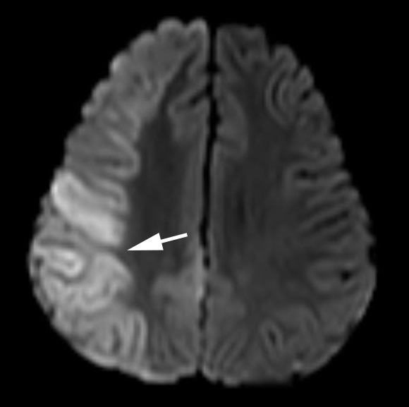

( of )
Correct: 0
Incorrect: 0
You are called to the bedside of this 68 year old woman, who recently had a stroke.
Where is the lesion?
Correct!
In this setting, patients are occasionally able to execute contraversive saccades if they are implored by the examiner, in which case the gaze disorder is called a “gaze preference.” The lesion will lie on the side of the gaze deviation. You can expect patients with this gaze disorder to display sensory and motor features of hemispatial neglect. Tip: focal seizures can cause horizontal gaze deviation, but that is an episodic disorder often accompanied by ipsilateral tonic-clonic movements of the face and extremities. Pontine lesions are a third cause of horizontal gaze deviation, but accompanying ipsilateral lower motor neuron facial palsy and nystagmus will point to that localization.

The abnormality is a right gaze deviation. The patient cannot move her eyes to the left beyond the midline with saccades or pursuit. But with passive head movement (the “oculocephalic” or “doll’s eye” maneuver), the eyes do move somewhat into left gaze. This dissociation between impaired volitional gaze (saccades, pursuit) and intact reflex gaze (vestibulo-ocular reflex) is called a “supranuclear gaze palsy.” It signifies that the lesion lies in the cerebral hemispheres or diencephalon. The usual cause is a fresh infarct or hemorrhage.
Incorrect
Incorrect
Incorrect